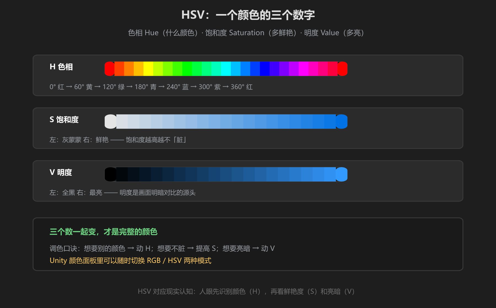
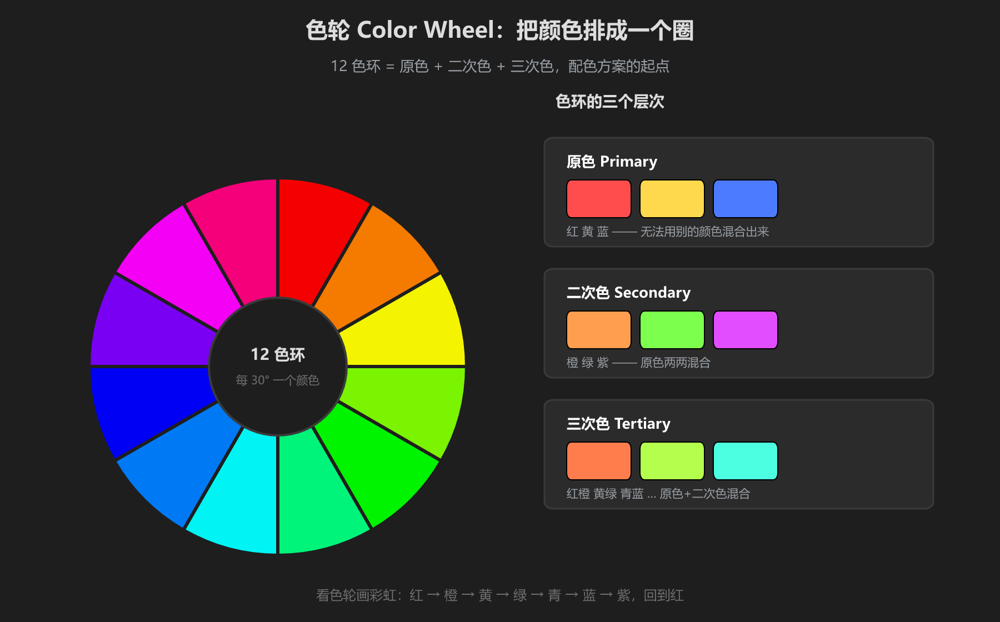

第 1 篇：色彩基础 — HSV 与色轮
做场景调色之前，先搞懂颜色是怎么被描述的。计算机里一个颜色就是三个数字，记住这三个数字的意义，后面所有调色都靠它。
1. HSV：一个颜色的三个数字

图：色相 Hue 决定「是什么颜色」，饱和度 Saturation 决定「多鲜艳」，明度 Value 决定「多亮」
- 色相 Hue（0-360°）：颜色本身。0° 红、120° 绿、240° 蓝，转一圈回到红。
- 饱和度 Saturation（0-100%）：0% 是纯灰（只有明暗），100% 是纯色。颜色「脏不脏」就看它。
- 明度 Value（0-100%）：0% 是纯黑，100% 是当前色相最亮的样子。
调色口诀：想要别的颜色 → 动 H；想要不脏 → 提高 S；想要亮暗 → 动 V。
2. 色轮：把颜色排成一个圈

图：12 色环由原色、二次色、三次色组成 —— 它是第 2 篇所有配色方案的地图
| 层次 | 是什么 | 例子 |
|---|---|---|
| 原色 | 无法用别的颜色混合出来 | 红、黄、蓝 |
| 二次色 | 两种原色混合 | 橙、绿、紫 |
| 三次色 | 原色 + 相邻二次色混合 | 红橙、黄绿、蓝紫… |
怎么记：色环就是一条首尾相接的彩虹 —— 红 → 橙 → 黄 → 绿 → 青 → 蓝 → 紫 → 回到红。配色方案说的「相邻」「相对」「120° 间隔」，都是在这条彩虹上取位置。
3. Unity 颜色面板

图：Unity 的 Color 控件 —— 点开任意颜色字段就能看到，右上角可切换 RGB / HSV
Unity 里所有颜色（材质、灯光、天空盒、雾）都用同一个面板：
- 打开方式：选中材质/灯光 → 点击 Inspector 里的颜色方块
- RGB 模式：三个滑条分别控制红/绿/蓝分量，范围 0-255
- HSV 模式：切到 H/S/V 滑条，H 是色相、S 是饱和度、V 是明度 —— 调色比 RGB 直觉得多
- Hex 码：面板底部的一串 #RRGGBB，记录和复用颜色的最可靠方式
- 取色器：面板左下角吸管，可以直接在场景里吸取任意颜色
习惯建议：在 Unity 里调色尽量用 HSV 模式。RGB 模式改一个数你可能不知道颜色会变哪去，HSV 模式下「加饱和」「压暗」都是一次拖动的事。
4. 人眼怎么看颜色（简说）
人眼里有三种视锥细胞，分别对红、绿、蓝光敏感，大脑把三路信号合成颜色 —— 这就是 RGB 三原色模型的由来，也是显示器只用红绿蓝三个通道就能模拟所有颜色的原因。
但人眼对颜色不是「等权」感知的：我们先分辨颜色（色相），再注意鲜艳度（饱和度），最后才是亮暗（明度）。所以场景第一印象往往由大面积的色相决定，这正是后面「先定情绪再挑颜色」的依据。
学前检查清单
- 能说出 HSV 三个参数分别控制什么
- 能在色环上指出原色、二次色、三次色
- 在 Unity 里打开过颜色面板并切换过 RGB / HSV 模式
- 知道 Hex 码是什么、在哪个位置